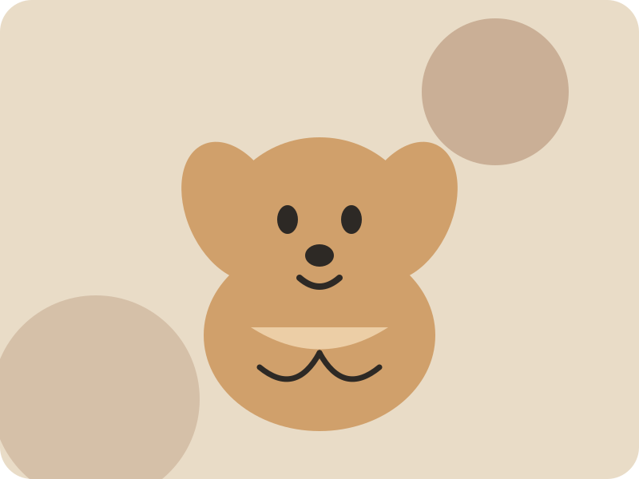
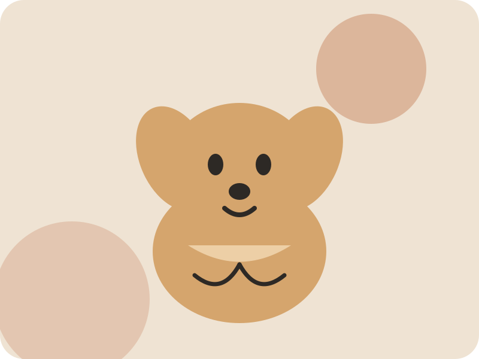

Осознанное разведение
Продумываем пары, учитываем происхождение, здоровье и особенности характера собак.
О питомнике
Sunny Paws — учебный образ семейного питомника, где в центре внимания здоровье собаки, характер и ответственное устройство щенка в новую семью.

Наша история
Всё началось с интереса к золотистым ретриверам и желания глубже понять особенности породы. Постепенно увлечение выросло в системную работу с ветеринарами, кинологами и владельцами собак.
Мы придерживаемся спокойного подхода: не гонимся за количеством помётов, следим за условиями содержания и уделяем внимание каждому щенку.
Наши принципы
Продумываем пары, учитываем происхождение, здоровье и особенности характера собак.
Щенки знакомятся с людьми, звуками дома, играми и безопасным исследованием окружающего мира.
Рассказываем будущим владельцам об особенностях породы и не скрываем возможные сложности.
Не исчезаем после передачи щенка: остаёмся на связи и отвечаем на вопросы владельцев.

Как растут щенки